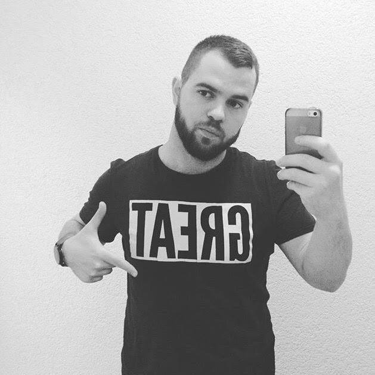

My name is Damir Dzelilovic. I was born 28 years ago in Bosnia. At the age of 3 I moved out to Croatia, and since then I was living on relation Bosnia-Croatia. After one dropped college (that I did not like), and a few jobs I decided to come to Denmark to study MMD in my pursuit of happiness. I love playing and watching sports (especially tennis), I love to cook, and I really, really love beer. But most of all I love the feeling when you face your fear, and still get to live another day. Cheers !